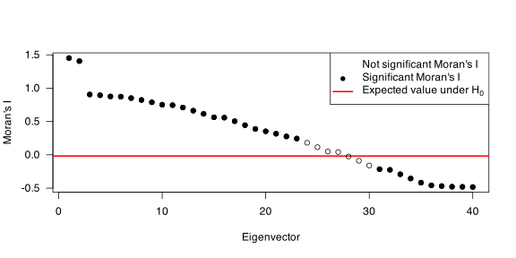
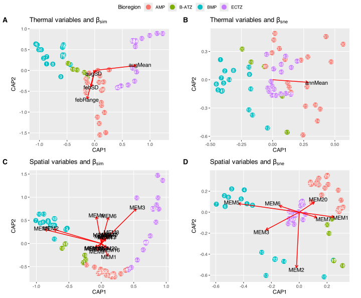
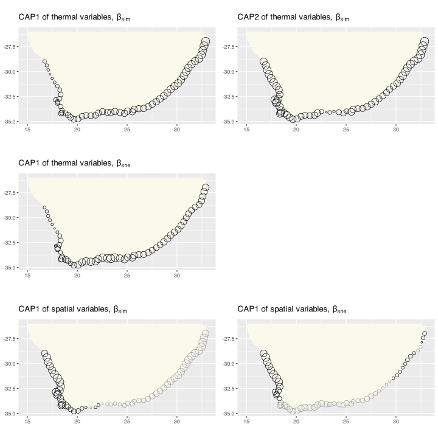
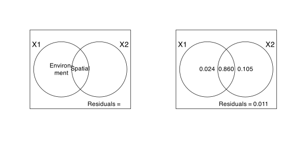
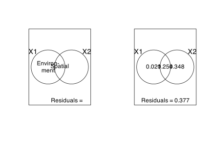

library(betapart)
library(vegan)
library(gridExtra)
library(grid)
library(gridBase)
library(tidyr)
library(spdep) # for dnearneigh() in PCNM.R
# library(devtools)
# install.packages("packfor", repos = "http://R-Forge.R-project.org")
# library(packfor) # replaced with vegan::ordistep()
# install.packages("AEM", repos = "http://R-Forge.R-project.org")
library(AEM) # for moran.I.multi() in PCNM.R
source("functions/pcoa_all.R")
source("functions/PCNM.R")
source("functions/spatial_MEM.R")Seaweeds in Two Oceans: Beta-diversity (Appendices)
In this document you will find examples of a fairly complicated series of constrained ordinations performed for the paper Smit et al. (2017). The analyses are based on the distribution of seaweeds around the coast of South Africa, and the environmental variables that might explain these distributions.
Appendix B
Spatial analysis background and code
The intention of this section is to show the approach and R scripts used to pull apart the spatial scales at which seaweed assemblages are structured around the coast of South Africa. Specifically, I wish to determine if these scales match those expressed by the coastal thermal provinces and the ocean regime underpinned by the Agulhas and Benguela Currents.
The data
I use two data sets. The first, \(Y\), comprises distribution records of 846 macroalgal species within each of 58 × 50 km-long sections (Appendix A) of the South African coast (updated from Bolton and Stegenga 2002). This represents ca. 90% of the known seaweed flora of South Africa, but excludes some very small and/or very rare species for which data are insufficient. The data are from verifiable literature sources and John Bolton and Rob Anderson’s own collections, assembled from information collected by teams of phycologists over three decades (Bolton 1986; Stegenga et al. 1997; Bolton and Stegenga 2002; De Clerck et al. 2005). The second, \(E\), is a dataset of in situ coastal seawater temperatures (Smit et al. 2013) derived from daily measurements over up to 40 years.
A third data set of explanatory variables — the spatial variables (\(S\)) — is constructed as per the instructions in section Preparation of spatial variables, later on.
Setting up the analysis environment
This is R, so first I need to find, install and load various packages. Some of the packages will be available on CRAN and can be accessed and installed in the usual way, but others will have to be downloaded from R Forge.
Now I get to the data. The first step involves the species table (\(Y\)). First I compute the Sørensen dissimilarity and then I decompose the dissimilarity into the ‘turnover’ (β) and ‘nestedness-resultant’ (β) components (Baselga 2010; Baselga et al. 2013) using the betapart.core() and betapart.pair() functions of the betapart package (Baselga et al. 2013). These are placed into the matrices \(Y1\) and \(Y2\). Optionally, I can apply a principal components analysis (PCA) on \(Y\) to find the major patterns in the community data. In vegan this is done using the rda() function and not supplying the constraints (i.e. the environment table, \(E\), or the spatial table, \(S\)). The formal analysis will use the species data in distance-based redundancy analyses (db-RDA as per vegan’s capscale() function) by coupling them with \(E\) and \(S\). I provide the pre-calculated data only.
# Read in the species data (note: on GitHub only the distance
# matrices obtained via 'beta.part' and 'beta.pair' (below)
# will be provided -- they are read in as 'Y1.Rdata' and 'Y2.Rdata';
# the raw data cannot be shared at this stage, but the distance matrix is provided):
# spp <- read.csv('../stats/seaweeds.csv')
# spp <- dplyr::select(spp, -1)
# Decompose total Sørensen dissimilarity into turnover and
# nestedness-resultant components:
# Y.core <- betapart.core(spp)
# Y.pair <- beta.pair(Y.core, index.family = "sor")
# Let Y1 be the turnover component (beta-sim):
# Y1 <- as.matrix(Y.pair$beta.sim)
# save(Y1, file = "data/Y1.Rdata")
load("data/Y1.Rdata")
# Let Y2 be the nestedness-resultant component (beta-sne):
# Y2 <- as.matrix(Y.pair$beta.sne)
# save(Y2, file = "data/Y2.Rdata")
load("data/Y2.Rdata")It is now necessary to load the environmental data and some setup files that partition the 58 coastal sections (and the species and environmental data that fall within these sections) into bioregions.
The thermal (environmental) data contain various variables, but in the analysis I use only some of them. These data were obtained from many sites along the South African coast, but using interpolation (not included here) I calculated the thermal properties for each of the coastal sections for which seaweed data are available. Consequently we have a data frame with 58 rows and a column for each of the thermal metrics. Before use, I apply vegan’s decostand() function to scale the data to zero mean and unit variance.
Four bioregions are recognised for South Africa (Bolton and Anderson 2004), namely the Benguela Marine Province (BMP; coastal sections 1–17), the Benguela-Agulhas Transition Zone (B-ATZ; 18–22), the Agulhas Marine Province (AMP; 19–43/44) and the East Coast Transition Zone (ECTZ; 44/45–58). My plotting functions partition the data into the bioregions and colour code the figures accordingly so I can see regional patterns in -diversity emerging.
# Now comes in the in situ temperatures for the 58 coastal sections
# (interpolated temperaures as per version 2 of the South African Coastal Temperature Network):
load('data/E.RData')
env <- as.data.frame(interpOut)
# I select only some of the thermal vars; the rest
# are collinear with some of the ones I import:
E1 <- dplyr::select(env, febMean, febRange, febSD, augMean,
augRange, augSD, annMean, annRange, annSD)
# Calculate z-scores:
E1 <- decostand(E1, method = "standardize")
# Load the coordinates of the coastal sections:
sites <- read.csv("data/sites.csv")
sites <- sites[, c(2, 1)]
# Load the bioregion definition:
bioreg <- read.csv('data/bioregions.csv', header = TRUE)Preparation of spatial variables
I test the niche difference mechanism as the primary species compositional assembly process operating along South African shores. I suggest that the thermal gradient along the coast provides a suite of abiotic (thermal) conditions from which species can select based on their physiological tolerances, and hence this will structure -diversity. For this mechanism to function one would assume that all species have equal access to all sections along this stretch of coast, thus following Beijerinck’s ‘Law’ that everything is everywhere but the environment selects (Sauer 1988) (but see main text!).
The basic approach to a spatial analysis structured around a biological response (e.g. community structure and composition; \(Y\)), environmental variables (\(E\)) and their spatial representation (\(S\)) involves an analysis of Moran’s eigenvector maps (MEM), followed by db-RDA and variance partitioning. Various literature sources discuss principle behind Moran’s eigenvector maps (Dray et al. 2006; Dray et al. 2012). Worked examples are also presented in the excellent book Numerical Ecology with R (Borcard et al. 2011) in Section 7.4. The method followed here has been adapted from these and other sources.
Obtaining the MEMs to use in the analysis is based on the procedure introduced by Borcard and Legendre (2002), which was later modified by Dray et al. (2006). The basic approach involves:
Set up a geographic or Euclidian distance matrix representing the pairwise distances between the \(n\) sites (\(D=[d_{ij}]\)). I already did this when I applied the
decostandfunction earlier.Construct a truncated distance matrix by calculating a Minimum Spanning Tree (\(S^{\star}\)) and noting the following rules: \[S^{\star} =\left\{ \begin{array}{rl} 0 & \mbox{if}~i = j \\ d_{ij} & \mbox{if}~d_{ij} \leq t \\ 4t & \mbox{if}~d_{ij} > t \end{array} \right.\] Weighting may be applied if desired, resulting in \(S^{\star}_w\). It is not done here.
Do a Principal Coordinates Analysis (PCoA) of the truncated distance matrix \(S^{\star}\).
The spatial properties imprinted on the species and their environment can be specified using a matrix of Euclidian or geographic distances. These coordinates are ‘truncated’ into a square (section \(\times\) section) matrix containing non-negative values (\(S^{\star}\)). By convention the diagonal values are set to zero. A very basic spatial matrix is binary, where 1 codes for pairs of neigbouring sites while 0 denotes non-connected sites according to the chosen network topology. Such matrices are called ‘binary connectivity matrices’ and relate to graphs made using distance criteria derived from graph theory.
Truncation produced by Minimum Spanning Trees (MST) focuses on the binary relationships between neighbouring sites, discarding any other connections (i.e. some sites are considered to be neighbours, while for others the relationships are null). One could also choose a Gabriel graph or another kind of network topology. Such matrix representations show section-to-section connectivities. In the case of South Africa’s coastline data, the MST causes sections to be connected only to other sections adjacent to two sides of it: for example, Section 4 is directly connected to only Sections 3 and 5; sections at the termini of the coastal ‘string’ of sections are each connected to only one other section. The binary connectivity matrices, also called topology-based connectivity matrices, can be produced from Euclidian or geographic coordinates using functions in at least two R packages (I start with geographic coordinates). One option is to use the spdep package’s mst.nb() function to calculate a MST, but there are also options in the vegan package and elsewhere. The neighbours list arrived at from the MST represents the spatial component, \(S^{\star}\). The MST results in small connectivity artefacts in the Saldanha Bay region where the closest sections are not necessarily the ones adjacent one-another following along the path around the coast, because sections at opposite sides of the bay may in fact be closer together. This topological inconsistency does not affect the spatial analysis in any way.
Once the truncated distance matrix has been prepared, it is subjected to a PCoA and I keep the eigenvectors that represent positive spatial correlation (positive Moran’s \(I\)). For the MEM analysis I use the function PCNM() that resides in the functions folder in the file PCNM.R (see notes inside about authorship). PCNM stands for Principal Coordinates Analysis of Neighbourhood Matrices (the neighbourhood matrix in this instance being the MST). This method automatically constructs the spatial variables and calculates the Moran’s I for each. The MEMs are completely orthogonal and represent the spatial structures over the full range of scales from 50 to 2,700 km. The large eigenvectors represent broad spatial scales while smaller ones cover finer features. The spatial data will be used as a set of explanatory variables in the multiple regression type analyses applied to a species dissimilarity matrix [i.e. the db-RDA; Dray et al. (2012)]
The code below reproduces the spatial analysis in the paper. Due to the length of the output I have prevented the script from returning any output here; rather, if the reader is for some odd reason interested in repeating this analysis, s/he may find the data and scripts in my GitHub repository, and the full code can be run in its entirety. Well, I hope this will work, but if it doesn’t (probably very likely) then write to me at ajsmit@uwc.ac.za and I shall assist — this may depend on if your email has a catchy title that will make it stand out from among all the other emails which other people think are equally important.

# summary(S.auto)
# The truncation distance:
S.dmin <- S.auto$thresh
# The number of eigenvalues:
S.len <- length(S.auto$values)
# Expected value of I, no spatial correlation:
S.auto$expected_Moran[1] -0.01754386# Select eigenfunction with positive spatial correlation:
S.sel <- which(S.auto$Moran_I$Positive == TRUE)
# length(S.sel)
# there are 27 MEMs, i.e. 27 of the PCNM variables (eigenvalues) relate
# significantly to Moran's I
# Extract the eigenvectors associated with those MEMs:
S.pos <- as.data.frame(S.auto$vectors)[, S.sel]The code below lets us visualise the configuration of the 58 coastal sections as represented by the minimum spanning tree. Because the sites are constrained by the coast the MST network topology results in a string of coastal sections arranged along the shore between Section 1 and Section 58. This spatial network therefore also captures the spatial connectivity in the seaweed’s dispersal ability along the shore, although no directionality is associated with dispersal. In the paper I discuss the possible influence of ocean currents (e.g. Wernberg et al. 2013) and I pointed out that it is tempting to assume that seaweeds would disperse in the direction the major ocean currents. These kinds of networks could conceivably be configured to model dispersal due to currents, but here it is simply used for representing the spatial scale of the study region.
db-RDA on the MEMs
The next step of the spatial analysis is to apply a db-RDA with the seaweed data (\(Y1\) and \(Y2\)) coupled with the MEMs. I now run a full (global) db-RDA on the significant, positive MEMs selected above, and I then perform a permutation test to see if the fit is significant.
# Run the db-RDA on the Y1 data:
S.Y1.cs <- capscale(Y1 ~., S.pos)
# Permutation test to test for the significance of the global fit:
anova(S.Y1.cs, parallel = 4) # ... yes, significant!Permutation test for capscale under reduced model
Permutation: free
Number of permutations: 999
Model: capscale(formula = Y1 ~ V1 + V2 + V3 + V4 + V5 + V6 + V7 + V8 + V9 + V10 + V11 + V12 + V13 + V14 + V15 + V16 + V17 + V18 + V19 + V20 + V21 + V22 + V23 + V24 + V25 + V26 + V27, data = S.pos)
Df SumOfSqs F Pr(>F)
Model 27 7.7090 46.715 0.001 ***
Residual 30 0.1834
---
Signif. codes: 0 '***' 0.001 '**' 0.01 '*' 0.05 '.' 0.1 ' ' 1# The global adjusted R2 --- the variance explained by the constrained axes:
S.Y1.cs.R2 <- RsquareAdj(S.Y1.cs)$adj.r.squared
# Variance explained by full model:
sum(S.Y1.cs$CCA$eig) / S.Y1.cs$tot.chi * 100[1] 102.4669# And on the Y2 data (uncommented, but same as above):
S.Y2.cs <- capscale(Y2 ~., S.pos)
S.Y2.cs.R2 <- RsquareAdj(S.Y2.cs)$adj.r.squared
sum(S.Y2.cs$CCA$eig) / S.Y2.cs$tot.chi * 100[1] 128.8837Initial analysis (pre-2017): Since the analysis is significant, I compute the adjusted R2 and run forward selection of the MEMs. The forward selection procedure of Blanchet et al. (2008) is implemented in the packfor package for R, and I use it to reduce the number of MEM variables and retain only those that best fit the biotic data. Forward selection prevents the inflation of the overall type I error and reduces the number of explanatory variables used in the final model, which improves parsimony. I then run a new db-RDA analysis on the ‘best’ (reduced) set of MEM variables that was selected.
Update (2024): The packfor package is no longer available so I have updated my methods to use vegan’s ordiR2step() function instead. This function is a stepwise model selection procedure that uses adjusted R2 as the criterion (as in packfor) for selecting the best model. I run the forward selection procedure on the full model and retain the significant (‘best’, reduced) MEMs in the final model. I then use only the retained MEMs in subsequent steps.
# Run the db-RDA on the Y1 data:
S.Y1.cs.null <- capscale(Y1 ~ 1, S.pos) # a null model
S.Y1.cs <- capscale(Y1 ~ ., S.pos)
S.Y1.fwd <- ordiR2step(S.Y1.cs.null, S.Y1.cs, trace = FALSE)
# the significant MEMs to retain are
as.data.frame(S.Y1.fwd$anova) R2.adj Df AIC F Pr(>F)
+ V5 0.3419875 1 98.9761247 28.465163 0.002
+ V2 0.5916369 1 74.8236384 31.335263 0.002
+ V3 0.8000212 1 40.8987168 46.321422 0.002
+ V4 0.8462844 1 30.3120901 12.844949 0.002
+ V6 0.8940338 1 16.3211393 16.507948 0.002
+ V1 0.9138880 1 9.9315617 7.937262 0.008
+ V8 0.9289989 1 4.7075038 6.632087 0.002
+ V7 0.9420975 1 -0.2041116 6.201277 0.002
+ V10 0.9512619 1 -3.5708726 4.653429 0.016
+ V16 0.9607722 1 -7.4594140 5.022389 0.008
+ V15 0.9678252 1 -10.1943398 3.912828 0.010
+ V9 0.9741619 1 -12.6673984 3.607809 0.018
+ V19 0.9805613 1 -15.3566916 3.705158 0.012
+ V13 0.9861936 1 -17.6699025 3.319629 0.010
+ V20 0.9920930 1 -20.3288673 3.512936 0.024
+ V17 0.9977616 1 -22.9663830 3.412867 0.006
+ V14 1.0031945 1 -25.5538792 3.292275 0.014
+ V18 1.0085029 1 -28.1642539 3.226622 0.020
+ V12 1.0133225 1 -30.4287077 2.899230 0.038
+ V21 1.0177606 1 -32.3837909 2.611085 0.040
<All variables> 1.0468703 NA NA NA NA# Run the db-RDA on the Y2 data:
S.Y2.cs.null <- capscale(Y2 ~ 1, S.pos) # a null model
S.Y2.cs <- capscale(Y2 ~ ., S.pos)
S.Y2.fwd <- ordiR2step(S.Y2.cs.null, S.Y2.cs, trace = FALSE)
# the significant MEMs to retain are
as.data.frame(S.Y2.fwd$anova) R2.adj Df AIC F Pr(>F)
+ V5 0.4780438 1 -81.77292 25.585731 0.002
+ V1 0.6353686 1 -89.26366 9.778047 0.002
+ V3 0.7914705 1 -98.09917 11.092093 0.002
+ V2 0.8633772 1 -101.81749 5.491629 0.012
+ V6 0.9240356 1 -104.95897 4.820089 0.024
+ V7 0.9725744 1 -107.28462 3.949022 0.030
+ V20 1.0141966 1 -109.12012 3.418240 0.028
+ V16 1.0547935 1 -110.95852 3.352499 0.040
+ V4 1.0961265 1 -112.97023 3.437541 0.042
+ V10 1.1268540 1 -113.94787 2.475932 0.050
<All variables> 1.5487904 NA NA NA NANow I run a new db-RDA analysis on the ‘best’ (reduced) set of MEM variables that was selected.
# Run a new db-RDA on the best MEM variables:
S.Y1.s2 <- capscale(Y1 ~., data = S.Y1.red)
# no need to check these for collinearity as the
# MEMs are completely orthogonal..
# Permutation test to test for significance:
anova(S.Y1.s2, parallel = 4)Permutation test for capscale under reduced model
Permutation: free
Number of permutations: 999
Model: capscale(formula = Y1 ~ MEM5 + MEM2 + MEM3 + MEM4 + MEM6 + MEM1 + MEM8 + MEM7 + MEM10 + MEM16 + MEM15 + MEM9 + MEM19 + MEM13 + MEM20 + MEM17 + MEM14 + MEM18 + MEM12 + MEM21, data = S.Y1.red)
Df SumOfSqs F Pr(>F)
Model 20 7.6102 49.887 0.001 ***
Residual 37 0.2822
---
Signif. codes: 0 '***' 0.001 '**' 0.01 '*' 0.05 '.' 0.1 ' ' 1Permutation test for capscale under reduced model
Forward tests for axes
Permutation: free
Number of permutations: 999
Model: capscale(formula = Y1 ~ MEM5 + MEM2 + MEM3 + MEM4 + MEM6 + MEM1 + MEM8 + MEM7 + MEM10 + MEM16 + MEM15 + MEM9 + MEM19 + MEM13 + MEM20 + MEM17 + MEM14 + MEM18 + MEM12 + MEM21, data = S.Y1.red)
Df SumOfSqs F Pr(>F)
CAP1 1 5.7962 759.9148 0.001 ***
CAP2 1 1.5395 201.8412 0.001 ***
CAP3 1 0.1624 21.2963 0.001 ***
CAP4 1 0.0339 4.4467 0.889
CAP5 1 0.0316 4.1472 0.915
CAP6 1 0.0160 2.0913 1.000
CAP7 1 0.0102 1.3333 1.000
CAP8 1 0.0068 0.8886 1.000
CAP9 1 0.0051 0.6735 1.000
CAP10 1 0.0027 0.3527 1.000
CAP11 1 0.0023 0.3043 1.000
CAP12 1 0.0012 0.1602 1.000
CAP13 1 0.0009 0.1156 1.000
CAP14 1 0.0005 0.0699 1.000
CAP15 1 0.0004 0.0508 1.000
CAP16 1 0.0002 0.0317 1.000
CAP17 1 0.0001 0.0140 1.000
CAP18 1 0.0000 0.0031 1.000
CAP19 1 0.0000 0.0022 1.000
CAP20 1 0.0000 0.0010 1.000
Residual 37 0.2822
---
Signif. codes: 0 '***' 0.001 '**' 0.01 '*' 0.05 '.' 0.1 ' ' 1# The significant axes:
S.Y1.axis.test <- anova(S.Y1.s2, by = "terms", parallel = 4)
S.Y1.ax <- which(S.Y1.axis.test[, 4] < 0.05)
S.Y1.sign.ax <- colnames(S.Y1.red[,S.Y1.ax])
# Test by terms:
anova(S.Y1.s2, by = "terms", parallel = 4)Permutation test for capscale under reduced model
Terms added sequentially (first to last)
Permutation: free
Number of permutations: 999
Model: capscale(formula = Y1 ~ MEM5 + MEM2 + MEM3 + MEM4 + MEM6 + MEM1 + MEM8 + MEM7 + MEM10 + MEM16 + MEM15 + MEM9 + MEM19 + MEM13 + MEM20 + MEM17 + MEM14 + MEM18 + MEM12 + MEM21, data = S.Y1.red)
Df SumOfSqs F Pr(>F)
MEM5 1 2.65977 348.7118 0.001 ***
MEM2 1 1.89917 248.9924 0.001 ***
MEM3 1 1.53915 201.7919 0.001 ***
MEM4 1 0.35003 45.8908 0.001 ***
MEM6 1 0.34802 45.6269 0.001 ***
MEM1 1 0.14764 19.3558 0.001 ***
MEM8 1 0.11109 14.5646 0.001 ***
MEM7 1 0.09409 12.3353 0.001 ***
MEM10 1 0.06570 8.6141 0.003 **
MEM16 1 0.06543 8.5783 0.004 **
MEM15 1 0.04800 6.2931 0.003 **
MEM9 1 0.04188 5.4912 0.008 **
MEM19 1 0.04058 5.3196 0.012 *
MEM13 1 0.03453 4.5274 0.018 *
MEM20 1 0.03453 4.5265 0.015 *
MEM17 1 0.03172 4.1587 0.028 *
MEM14 1 0.02898 3.7993 0.043 *
MEM18 1 0.02690 3.5272 0.040 *
MEM12 1 0.02305 3.0221 0.059 .
MEM21 1 0.01992 2.6111 0.082 .
Residual 37 0.28221
---
Signif. codes: 0 '***' 0.001 '**' 0.01 '*' 0.05 '.' 0.1 ' ' 1# The adjusted R2 --- the variance explained by the constrained axes:
# S.Y1.s2.R2 <- RsquareAdj(S.Y1.s2)$adj.r.squared
# Variance explained by reduced model:
sum(S.Y1.s2$CCA$eig) / S.Y1.s2$tot.chi * 100[1] 101.1529 CAP1 CAP2 CAP3 CAP4
MEM5 -0.66638977 0.2324777 -0.02348013 -0.1109129
MEM2 -0.55850366 0.2341195 -0.15482672 0.1870963
MEM3 0.41265888 0.5719467 -0.53536311 0.1663092
MEM4 -0.05638993 0.4424862 0.37525094 0.1764590
MEM6 0.08457426 0.4325520 0.25691479 0.2550990
MEM1 0.08067915 -0.2083399 0.43757849 0.4164481Permutation test for capscale under reduced model
Permutation: free
Number of permutations: 999
Model: capscale(formula = Y2 ~ MEM5 + MEM1 + MEM3 + MEM2 + MEM6 + MEM7 + MEM20 + MEM16 + MEM4 + MEM10, data = S.Y2.red)
Df SumOfSqs F Pr(>F)
Model 10 0.240218 11.564 0.001 ***
Residual 47 0.097633
---
Signif. codes: 0 '***' 0.001 '**' 0.01 '*' 0.05 '.' 0.1 ' ' 1Permutation test for capscale under reduced model
Forward tests for axes
Permutation: free
Number of permutations: 999
Model: capscale(formula = Y2 ~ MEM5 + MEM1 + MEM3 + MEM2 + MEM6 + MEM7 + MEM20 + MEM16 + MEM4 + MEM10, data = S.Y2.red)
Df SumOfSqs F Pr(>F)
CAP1 1 0.210325 101.2490 0.001 ***
CAP2 1 0.019740 9.5027 0.052 .
CAP3 1 0.006660 3.2062 0.811
CAP4 1 0.001659 0.7986 0.999
CAP5 1 0.001215 0.5850 1.000
CAP6 1 0.000226 0.1088 1.000
CAP7 1 0.000167 0.0806 1.000
CAP8 1 0.000126 0.0607 1.000
CAP9 1 0.000095 0.0456 1.000
CAP10 1 0.000005 0.0022 1.000
Residual 47 0.097633
---
Signif. codes: 0 '***' 0.001 '**' 0.01 '*' 0.05 '.' 0.1 ' ' 1S.Y2.axis.test <- anova(S.Y2.s2, by = "terms", parallel = 4)
S.Y2.ax <- which(S.Y2.axis.test[, 4] < 0.05)
S.Y2.sign.ax <- colnames(S.Y2.red[,S.Y2.ax])
S.Y2.s2.R2 <- RsquareAdj(S.Y2.s2)$adj.r.squared
sum(S.Y2.s2$CCA$eig) / S.Y2.s2$tot.chi * 100[1] 110.4599 CAP1 CAP2 CAP3 CAP4
MEM5 -0.7078184 0.14311986 0.079397978 0.24900449
MEM1 0.4050368 -0.08012953 -0.006120443 0.03523688
MEM3 -0.3876470 -0.26478333 -0.204391543 0.23681505
MEM2 -0.0325433 -0.85424176 -0.291188240 -0.01401998
MEM6 -0.2304812 0.10824415 -0.392535120 -0.12972099
MEM7 0.2046975 -0.08026844 -0.104737594 0.53287698
MEM20 0.1779168 0.15636968 0.020387030 0.50353412
MEM16 0.1838637 -0.11068980 -0.030430027 -0.14889717
MEM4 -0.0716198 -0.32859787 0.778240435 0.21945102
MEM10 -0.1341523 -0.10206216 0.308283037 -0.50578262
attr(,"const")
[1] 1.876372A few visualisations
Now I make a visualisation to reveal the spatial arrangement of the MEMs used in the final db-RDA involving the spatial variables (i.e. and ). The spatial configuration relates to broad scales as seen in Fig. 3 in the paper. Here are plots of the site scores for the MEMs and \(Y1\) and \(Y2\) (a few panels belonging with Fig. 3):
# Plot the first canonical axis of the db-RDA with the significant MEMs for Y1;
# (see Fig. 3):
S.Y1.axes <- scores(S.Y1.s2, choices = c(1:3), display = "lc", scaling = 1)
S.Y1.plt.axis1 <- ggmap() +
geom_point(data = sites, aes(x = Longitude, y = Latitude,
size = abs(S.Y1.axes[, 1]),
col = ifelse(S.Y1.axes[, 1] < 0, "a", "b")), shape = 1) +
scale_size_continuous(guide = FALSE) +
scale_colour_manual(guide = "none", values = c("black", "grey60")) +
ggtitle(expression(paste("CAP1 of spatial variables, ", beta[sim])))
# And the same for Y2 (see Fig. 3):
S.Y2.axes <- scores(S.Y2.s2, choices = c(1:3), display = "lc", scaling = 1)
S.Y2.plt.axis1 <- ggmap() +
geom_point(data = sites, aes(x = Longitude, y = Latitude,
size = abs(S.Y2.axes[, 1]),
col = ifelse(S.Y2.axes[, 1] < 0, "a", "b")), shape = 1) +
scale_size_continuous(guide = FALSE) +
scale_colour_manual(guide = "none", values = c("black", "grey60")) +
ggtitle(expression(paste("CAP1 of spatial variables, ", beta[sne])))Now that I know that spatial structures are present in the seaweed data I check how these significant spatial patterns (two significant canonical axes, CAP1 and CAP2) are related to the environmental variables using linear regression. Checks for normality are also done but none of the output is printed here.
Next I want to show the ordination biplots of the MEM variables with respect to the sites using scaling = 2 (species) and showing the LC scores. Now I can see the major directions of influence of the spatial variables with respect to the sites. The code below produces a few panels of Fig. 2 (the figure is reproduced at the end of this document):
# A few of the panels that go with Fig. 2;
# first for Y1...:
S.Y1.scrs <- scores(S.Y1.s2, display = c("sp","wa","lc","bp","cn"))
S.Y1.df_sites <- data.frame(S.Y1.scrs$constraints)
S.Y1.df_sites$bioreg <- bioreg$bolton
S.Y1.df_sites$section <- seq(1:58)
colnames(S.Y1.df_sites) <- c("x", "y", "Bioregion", "Section")
multiplier <- ordiArrowMul(S.Y1.scrs$biplot)
S.Y1.bp <- S.Y1.scrs$biplot * multiplier
S.Y1.bp <- as.data.frame(S.Y1.bp)
S.Y1.bp$labels <- rownames(S.Y1.bp)
colnames(S.Y1.bp) <- c("x", "y", "labels")
S.Y1.bp.sign <- S.Y1.bp[S.Y1.bp$labels %in% S.Y1.sign.ax,]
# A modification of the vegan ordiArrowTextXY() function to prevent the
# "plot.new has not been called yet" from occuring
source("functions/text_mult.R")
S.Y1.text <- text.mult(S.Y1.scrs$biplot)
S.Y1.text <- as.data.frame(S.Y1.text)
S.Y1.text$labels <- rownames(S.Y1.text)
colnames(S.Y1.text) <- c("x", "y", "labels")
S.Y1.text.sign <- S.Y1.text[S.Y1.text$labels %in% S.Y1.sign.ax,]
S.Y1.p <- ggplot(data = S.Y1.df_sites, aes(x, y, colour = Bioregion)) +
geom_point(size = 4.0) +
geom_text(aes(label = Section), size = 3.0, col = "white") +
geom_segment(data = S.Y1.bp,
aes(x = 0, y = 0, xend = x, yend = y),
arrow = arrow(length = unit(0.2, "cm")),
color = "red", alpha = 1, size = 0.7) +
geom_text(data = as.data.frame(S.Y1.text),
aes(x, y, label = rownames(S.Y1.text)),
color = "black") +
xlab("CAP1") + ylab("CAP2") +
ggtitle(expression(paste("Spatial variables and ", beta[sim]))) +
theme_grey() +
theme(panel.grid.minor = element_blank(),
legend.position = "none",
aspect.ratio = 0.8)
# ...then for Y2:
S.Y2.scrs <- scores(S.Y2.s2, display = c("sp","wa","lc","bp","cn"))
S.Y2.df_sites <- data.frame(S.Y2.scrs$constraints)
S.Y2.df_sites$bioreg <- bioreg$bolton
S.Y2.df_sites$section <- seq(1:58)
colnames(S.Y2.df_sites) <- c("x", "y", "Bioregion", "Section")
multiplier <- ordiArrowMul(S.Y2.scrs$biplot, fill = 0.25)
S.Y2.bp <- S.Y2.scrs$biplot * multiplier
S.Y2.bp <- as.data.frame(S.Y2.bp)
S.Y2.bp$labels <- rownames(S.Y2.bp)
colnames(S.Y2.bp) <- c("x", "y", "labels")
S.Y2.bp.sign <- S.Y2.bp[S.Y2.bp$labels %in% S.Y2.sign.ax,]
S.Y2.text <- text.mult(S.Y2.scrs$biplot, fill = 0.25)
S.Y2.text <- as.data.frame(S.Y2.text)
S.Y2.text$labels <- rownames(S.Y2.text)
colnames(S.Y2.text) <- c("x", "y", "labels")
S.Y2.text.sign <- S.Y2.text[S.Y2.text$labels %in% S.Y2.sign.ax,]
S.Y2.p <- ggplot(data = S.Y2.df_sites, aes(x, y, colour = Bioregion)) +
geom_point(size = 4.0) +
geom_text(aes(label = Section), size = 3.0, col = "white") +
geom_segment(data = S.Y2.bp.sign,
aes(x = 0, y = 0, xend = x, yend = y),
arrow = arrow(length = unit(0.2, "cm")),
color = "red", alpha = 1, size = 0.7) +
geom_text(data = as.data.frame(S.Y2.text.sign),
aes(x, y, label = rownames(S.Y2.text.sign)),
color = "black") +
xlab("CAP1") + ylab("CAP2") +
ggtitle(expression(paste("Spatial variables and ", beta[sne]))) +
theme_grey() +
theme(panel.grid.minor = element_blank(),
legend.position = "none",
aspect.ratio = 0.8)Analysis of the thermal variables
As before with the spatial variable, I now do a db-RDA involving all the thermal variables (\(E\)) followed by forward selection. There is less explanation provided here as the reader should now be familiar with db-RDA — the procedure is the same as with the MEMs, just different explanatory variables are supplied. Another difference is that the thermal variables are not necessarily orthogonal, so I check for collinearity using variance inflation factors (VIF).
I start with the full model and then run forward selection and repeat the db-RDA on the reduced set. Analyses shown for \(Y1\) and \(Y2\):
# First Y1:
E.Y1.cs <- capscale(Y1 ~., E1)
# Is the fit significant?
anova(E.Y1.cs, parallel = 4) # ... yes!Permutation test for capscale under reduced model
Permutation: free
Number of permutations: 999
Model: capscale(formula = Y1 ~ febMean + febRange + febSD + augMean + augRange + augSD + annMean + annRange + annSD, data = E1)
Df SumOfSqs F Pr(>F)
Model 8 6.8640 40.881 0.001 ***
Residual 49 1.0284
---
Signif. codes: 0 '***' 0.001 '**' 0.01 '*' 0.05 '.' 0.1 ' ' 1# The adjusted R2 --- the variance explained by the constrained axes:
E.Y1.R2a <- RsquareAdj(E.Y1.cs)$adj.r.squared
# Variance explained by full model:
sum(E.Y1.cs$CCA$eig) / E.Y1.cs$tot.chi * 100[1] 91.23468Permutation test for capscale under reduced model
Permutation: free
Number of permutations: 999
Model: capscale(formula = Y2 ~ febMean + febRange + febSD + augMean + augRange + augSD + annMean + annRange + annSD, data = E1)
Df SumOfSqs F Pr(>F)
Model 8 0.16208 5.6478 0.001 ***
Residual 49 0.17577
---
Signif. codes: 0 '***' 0.001 '**' 0.01 '*' 0.05 '.' 0.1 ' ' 1[1] 74.52904# Forward selection on Y1:
# Run the db-RDA on the Y1 data:
E.Y1.cs.null <- capscale(Y1 ~ 1, E1) # a null model
# Forward selection on Y1:
E.Y1.fwd <- ordiR2step(E.Y1.cs.null, E.Y1.cs, trace = FALSE)
E.Y1.fwd$anova R2.adj Df AIC F Pr(>F)
+ augMean 0.72355 1 54.065 127.2180 0.002 **
+ febRange 0.85867 1 24.298 40.1105 0.002 **
+ febSD 0.87924 1 18.983 7.2578 0.002 **
+ augSD 0.88986 1 16.561 4.1988 0.012 *
<All variables> 0.89804
---
Signif. codes: 0 '***' 0.001 '**' 0.01 '*' 0.05 '.' 0.1 ' ' 1# Now Y2:
E.Y2.cs.null <- capscale(Y2 ~ 1, E1) # a null model
E.Y2.fwd <- ordiR2step(E.Y2.cs.null, E.Y2.cs, trace = FALSE)
E.Y2.fwd$anova R2.adj Df AIC F Pr(>F)
+ annSD 0.49607 1 -82.745 26.9639 0.002 **
+ annMean 0.55700 1 -84.611 3.7918 0.028 *
+ febRange 0.64592 1 -88.324 5.5891 0.006 **
<All variables> 0.70371
---
Signif. codes: 0 '***' 0.001 '**' 0.01 '*' 0.05 '.' 0.1 ' ' 1# Write the significant envs to a new object, and
# identity of significant envs in increasing order;
# first Y1:
E.Y1.sign <- row.names(as.data.frame(scores(E.Y1.fwd)$biplot))
E.Y1.red <- E1[, E.Y1.sign]
# Run a new env analysis on the best env variables:
E.Y1.cs2 <- capscale(Y1 ~., E.Y1.red)
# Check for collinearity:
vif.cca(E.Y1.cs2) # seems fine augMean febRange febSD augSD
1.153254 3.621599 4.172278 1.561752 Permutation test for capscale under reduced model
Permutation: free
Number of permutations: 999
Model: capscale(formula = Y1 ~ augMean + febRange + febSD + augSD, data = E.Y1.red)
Df SumOfSqs F Pr(>F)
Model 4 6.7530 78.528 0.001 ***
Residual 53 1.1394
---
Signif. codes: 0 '***' 0.001 '**' 0.01 '*' 0.05 '.' 0.1 ' ' 1Permutation test for capscale under reduced model
Forward tests for axes
Permutation: free
Number of permutations: 999
Model: capscale(formula = Y1 ~ augMean + febRange + febSD + augSD, data = E.Y1.red)
Df SumOfSqs F Pr(>F)
CAP1 1 5.5925 260.1358 0.001 ***
CAP2 1 1.1231 52.2396 0.001 ***
CAP3 1 0.0347 1.6150 0.377
CAP4 1 0.0027 0.1236 0.994
Residual 53 1.1394
---
Signif. codes: 0 '***' 0.001 '**' 0.01 '*' 0.05 '.' 0.1 ' ' 1# The significant axes:
E.Y1.axis.test <- anova(E.Y1.cs2, by = "terms", parallel = 4)
E.Y1.ax <- which(E.Y1.axis.test[, 4] < 0.05)
E.Y1.sign.ax <- colnames(E.Y1.red[,E.Y1.ax])
# The adjusted R2 --- the variance explained by the constrained axes:
E.Y1.cs2.R2 <- RsquareAdj(E.Y1.cs2)$adj.r.squared
# Variance explained by reduced (final) model:
sum(E.Y1.cs2$CCA$eig) / E.Y1.cs2$tot.chi * 100[1] 89.7591 CAP1 CAP2
augMean 0.98741583 0.15628849
febRange -0.17999916 -0.90243974
febSD -0.08286071 -0.51021047
augSD -0.01956960 -0.07535446
attr(,"const")
[1] 4.550643# ...then Y2
E.Y2.sign <- row.names(as.data.frame(scores(E.Y2.fwd)$biplot))
E.Y2.red <- E1[, E.Y2.sign]
E.Y2.cs2 <- capscale(Y2 ~., E.Y2.red)
vif.cca(E.Y2.cs2) # seems fine annSD annMean febRange
1.740039 1.464132 1.740465 Permutation test for capscale under reduced model
Permutation: free
Number of permutations: 999
Model: capscale(formula = Y2 ~ annSD + annMean + febRange, data = E.Y2.red)
Df SumOfSqs F Pr(>F)
Model 3 0.14452 13.456 0.001 ***
Residual 54 0.19333
---
Signif. codes: 0 '***' 0.001 '**' 0.01 '*' 0.05 '.' 0.1 ' ' 1E.Y2.axis.test <- anova(E.Y2.cs2, by = "terms", parallel = 4)
# E.Y2.ax <- which(E.Y2.axis.test[, 4] < 0.05) # doesn't work...
# E.Y2.sign.ax <- colnames(E.Y2.red[,E.Y2.ax])
E.Y2.sign.ax <- "annMean" # a manual cheat
anova(E.Y2.cs2, by = "terms", parallel = 4) # ... yes!Permutation test for capscale under reduced model
Terms added sequentially (first to last)
Permutation: free
Number of permutations: 999
Model: capscale(formula = Y2 ~ annSD + annMean + febRange, data = E.Y2.red)
Df SumOfSqs F Pr(>F)
annSD 1 0.109804 30.6701 0.001 ***
annMean 1 0.014708 4.1081 0.029 *
febRange 1 0.020010 5.5891 0.015 *
Residual 54 0.193329
---
Signif. codes: 0 '***' 0.001 '**' 0.01 '*' 0.05 '.' 0.1 ' ' 1[1] 66.45583 CAP1 CAP2
annSD 0.8907338 -0.35414025
annMean 0.5645966 -0.05434144
febRange 0.5256591 0.51665741
attr(,"const")
[1] 1.876372Now I make the remaining panels of Fig. 3, these showing the spatial arrangement associated with the site scores of the environmental variables for \(Y1\) and \(Y2\):
# Plot the two significant canonical axes of the
# db-RDA with the significant MEMs. This part of Fig. 3:
E.Y1.axes <- scores(E.Y1.cs2, choices = c(1:2),
display = "lc", scaling = 1)
E.Y1.plt.axis1 <- ggmap() +
geom_point(data = sites, aes(x = Longitude, y = Latitude, size = E.Y1.axes[, 1]),
col = "black", shape = 1) +
scale_size_continuous(guide = FALSE) +
ggtitle(expression(paste("CAP1 of thermal variables, ", beta[sim])))
E.Y1.plt.axis2 <- ggmap() +
geom_point(data = sites, aes(x = Longitude, y = Latitude, size = E.Y1.axes[, 2]),
col = "black", shape = 1) +
scale_size_continuous(guide = FALSE) +
ggtitle(expression(paste("CAP2 of thermal variables, ", beta[sim])))
E.Y2.axes <- scores(E.Y2.cs2, choices = c(1:3),
display = "lc", scaling = 1)
E.Y2.plt.axis1 <- ggmap() +
geom_point(data = sites, aes(x = Longitude, y = Latitude, size = E.Y2.axes[, 1]),
col = "black", shape = 1) +
scale_size_continuous(guide = FALSE) +
ggtitle(expression(paste("CAP1 of thermal variables, ", beta[sne])))And now I make the remaining panels of Fig. 2 (below) for Y1 and Y2 and the environmental constraining vectors:
# The ordiplots in Fig. 2:
E.Y1.scrs <- scores(E.Y1.cs2, display = c("sp","wa","lc","bp","cn"))
E.Y1.df_sites <- data.frame(E.Y1.scrs$constraints)
E.Y1.df_sites$bioreg <- bioreg$bolton
E.Y1.df_sites$section <- seq(1:58)
colnames(E.Y1.df_sites) <- c("x", "y", "Bioregion", "Section")
multiplier <- ordiArrowMul(E.Y1.scrs$biplot)
E.Y1.bp <- E.Y1.scrs$biplot * multiplier
E.Y1.bp <- as.data.frame(E.Y1.bp)
E.Y1.bp$labels <- rownames(E.Y1.bp)
colnames(E.Y1.bp) <- c("x", "y", "labels")
E.Y1.bp.sign <- E.Y1.bp[E.Y1.bp$labels %in% E.Y1.sign.ax,]
E.Y1.text <- text.mult(E.Y1.scrs$biplot)
E.Y1.text <- as.data.frame(E.Y1.text)
E.Y1.text$labels <- rownames(E.Y1.text)
colnames(E.Y1.text) <- c("x", "y", "labels")
E.Y1.text.sign <- E.Y1.text[E.Y1.text$labels %in% E.Y1.sign.ax,]
E.Y1.p <- ggplot(data = E.Y1.df_sites, aes(x, y, colour = Bioregion)) +
geom_point(size = 4.0) +
geom_text(aes(label = Section), size = 3.0, col = "white") +
geom_segment(data = E.Y1.bp.sign,
aes(x = 0, y = 0, xend = x, yend = y),
arrow = arrow(length = unit(0.2, "cm")),
color = "red", alpha = 1, size = 0.7) +
geom_text(data = as.data.frame(E.Y1.text.sign),
aes(x, y, label = rownames(E.Y1.text.sign)),
color = "black") +
xlab("CAP1") + ylab("CAP2") +
ggtitle(expression(paste("Thermal variables and ", beta[sim]))) +
theme_grey() +
theme(panel.grid.minor = element_blank(),
legend.position = "none",
aspect.ratio = 0.8)
E.Y2.scrs <- scores(E.Y2.cs2, display = c("sp","wa","lc","bp","cn"))
E.Y2.df_sites <- data.frame(E.Y2.scrs$constraints)
E.Y2.df_sites$bioreg <- bioreg$bolton
E.Y2.df_sites$section <- seq(1:58)
colnames(E.Y2.df_sites) <- c("x", "y", "Bioregion", "Section")
multiplier <- ordiArrowMul(E.Y2.scrs$biplot, fill = 0.45)
E.Y2.bp <- E.Y2.scrs$biplot * multiplier
E.Y2.bp <- as.data.frame(E.Y2.bp)
E.Y2.bp$labels <- rownames(E.Y2.bp)
colnames(E.Y2.bp) <- c("x", "y", "labels")
E.Y2.bp.sign <- E.Y2.bp[E.Y2.bp$labels %in% E.Y2.sign.ax,]
E.Y2.text <- text.mult(E.Y2.scrs$biplot, fill = 0.45)
E.Y2.text <- as.data.frame(E.Y2.text)
E.Y2.text$labels <- rownames(E.Y2.text)
colnames(E.Y2.text) <- c("x", "y", "labels")
E.Y2.text.sign <- E.Y2.text[E.Y2.text$labels %in% E.Y2.sign.ax,]
E.Y2.p <- ggplot(data = E.Y2.df_sites, aes(x, y, colour = Bioregion)) +
geom_point(size = 4.0) +
geom_text(aes(label = Section), size = 3.0, col = "white") +
geom_segment(data = E.Y2.bp.sign,
aes(x = 0, y = 0, xend = x, yend = y),
arrow = arrow(length = unit(0.2, "cm")),
color = "red", alpha = 1, size = 0.7) +
geom_text(data = as.data.frame(E.Y2.text.sign),
aes(x, y, label = rownames(E.Y2.text.sign)),
color = "black") +
xlab("CAP1") + ylab("CAP2") +
ggtitle(expression(paste("Thermal variables and ", beta[sne]))) +
theme_grey() +
theme(panel.grid.minor = element_blank(),
legend.position = c(.80, .75),
aspect.ratio = 0.8)Here I now assemble the various panels into what we see produced in Fig. 2 in the paper:
# pdf("Fig2.pdf", width = 9, height = 8)
grid::grid.newpage()
grid::pushViewport(grid::viewport(layout = grid::grid.layout(2,2)))
vplayout <- function(x, y) grid::viewport(layout.pos.row = x, layout.pos.col = y)
print(E.Y1.p, vp = vplayout(1,1))
print(E.Y2.p, vp = vplayout(1,2))
print(S.Y1.p, vp = vplayout(2,1))
print(S.Y2.p, vp = vplayout(2,2))
And I do the same with assembling the panels that form Fig. 3 in the paper:
# pdf("Fig3.pdf", width = 9, height = 7)
grid::grid.newpage()
grid::pushViewport(grid::viewport(layout = grid::grid.layout(3,2)))
vplayout <- function(x, y) grid::viewport(layout.pos.row = x, layout.pos.col = y)
print(E.Y1.plt.axis1, vp = vplayout(1,1))
print(E.Y1.plt.axis2, vp = vplayout(1,2))
print(E.Y2.plt.axis1, vp = vplayout(2,1))
print(S.Y1.plt.axis1, vp = vplayout(3,1))
print(S.Y2.plt.axis1, vp = vplayout(3,2))
Partitioning of variance
Lastly, using vegan’s varpart() function, I partition the variance between the MEM variables and the thermal variables (Peres-Neto et al. 2006; Peres-Neto and Legendre 2010).
# These lines of code produce a few figures to visually understand
# the variance partitioning on Y1:
vp2.Y1 <- varpart(Y1, E.Y1.red, S.Y1.red)
par(mfrow = c(1, 2))
showvarparts(2, c("Environ-\nment","","Spatial",""))
plot(vp2.Y1, digits = 2)
par(mfrow = c(1, 1))
# Now I test the significant fractions [a], [b] and [c]...
ES.Y1.red <- cbind(E.Y1.red, S.Y1.red)
# Fraction E | S; pure environmental, i.e. [a]:
anova.cca(capscale(Y1 ~ augMean + febRange + febSD + augSD +
Condition(MEM1 + MEM2 + MEM3 + MEM4 + MEM5 +
MEM6 + MEM7 + MEM8 + MEM9 + MEM10 +
MEM13 + MEM15 + MEM16 +
MEM18 + MEM19 + MEM20),
data = ES.Y1.red), parallel = 4, step = 1000)Permutation test for capscale under reduced model
Permutation: free
Number of permutations: 999
Model: capscale(formula = Y1 ~ augMean + febRange + febSD + augSD + Condition(MEM1 + MEM2 + MEM3 + MEM4 + MEM5 + MEM6 + MEM7 + MEM8 + MEM9 + MEM10 + MEM13 + MEM15 + MEM16 + MEM18 + MEM19 + MEM20), data = ES.Y1.red)
Df SumOfSqs F Pr(>F)
Model 4 0.18004 8.0906 0.001 ***
Residual 37 0.20584
---
Signif. codes: 0 '***' 0.001 '**' 0.01 '*' 0.05 '.' 0.1 ' ' 1# Fraction S | E; pure spatial, i.e. [c]:
anova.cca(capscale(Y1 ~ MEM1 + MEM2 + MEM3 + MEM4 + MEM5 +
MEM6 + MEM7 + MEM8 + MEM9 + MEM10 +
MEM13 + MEM15 + MEM16 +
MEM18 + MEM19 + MEM20 +
Condition(augMean + febRange + febSD + augSD),
data = ES.Y1.red), parallel = 4, step = 1000)Permutation test for capscale under reduced model
Permutation: free
Number of permutations: 999
Model: capscale(formula = Y1 ~ MEM1 + MEM2 + MEM3 + MEM4 + MEM5 + MEM6 + MEM7 + MEM8 + MEM9 + MEM10 + MEM13 + MEM15 + MEM16 + MEM18 + MEM19 + MEM20 + Condition(augMean + febRange + febSD + augSD), data = ES.Y1.red)
Df SumOfSqs F Pr(>F)
Model 16 0.93358 10.488 0.001 ***
Residual 37 0.20584
---
Signif. codes: 0 '***' 0.001 '**' 0.01 '*' 0.05 '.' 0.1 ' ' 1# Fraction E; environmental, i.e. [a] + [b]:
anova.cca(capscale(Y1 ~., E.Y1.red), parallel = 4, step = 1000)Permutation test for capscale under reduced model
Permutation: free
Number of permutations: 999
Model: capscale(formula = Y1 ~ augMean + febRange + febSD + augSD, data = E.Y1.red)
Df SumOfSqs F Pr(>F)
Model 4 6.7530 78.528 0.001 ***
Residual 53 1.1394
---
Signif. codes: 0 '***' 0.001 '**' 0.01 '*' 0.05 '.' 0.1 ' ' 1# Fractions S; spatial, i.e. [b] + [c]:
anova.cca(capscale(Y1 ~., S.Y1.red), parallel = 4, step = 1000)Permutation test for capscale under reduced model
Permutation: free
Number of permutations: 999
Model: capscale(formula = Y1 ~ MEM5 + MEM2 + MEM3 + MEM4 + MEM6 + MEM1 + MEM8 + MEM7 + MEM10 + MEM16 + MEM15 + MEM9 + MEM19 + MEM13 + MEM20 + MEM17 + MEM14 + MEM18 + MEM12 + MEM21, data = S.Y1.red)
Df SumOfSqs F Pr(>F)
Model 20 7.6102 49.887 0.001 ***
Residual 37 0.2822
---
Signif. codes: 0 '***' 0.001 '**' 0.01 '*' 0.05 '.' 0.1 ' ' 1# Fractions E + S; spatial and environmental, i.e. [a] + [b] + [c]:
anova.cca(capscale(Y1 ~., cbind(E.Y1.red, S.Y1.red)), parallel = 4, step = 1000)Permutation test for capscale under reduced model
Permutation: free
Number of permutations: 999
Model: capscale(formula = Y1 ~ augMean + febRange + febSD + augSD + MEM5 + MEM2 + MEM3 + MEM4 + MEM6 + MEM1 + MEM8 + MEM7 + MEM10 + MEM16 + MEM15 + MEM9 + MEM19 + MEM13 + MEM20 + MEM17 + MEM14 + MEM18 + MEM12 + MEM21, data = cbind(E.Y1.red, S.Y1.red))
Df SumOfSqs F Pr(>F)
Model 24 7.7326 66.548 0.001 ***
Residual 33 0.1598
---
Signif. codes: 0 '***' 0.001 '**' 0.01 '*' 0.05 '.' 0.1 ' ' 1
Partition of squared Unknown user-supplied distance in dbRDA
Call: varpart(Y = Y2, X = E.Y2.red, S.Y2.red)
Explanatory tables:
X1: E.Y2.red
X2: S.Y2.red
No. of explanatory tables: 2
Total variation (SS): 0.21747
No. of observations: 58
Partition table:
Df R.squared Adj.R.squared Testable
[a+c] = X1 3 0.31333 0.27519 TRUE
[b+c] = X2 10 0.67180 0.60197 TRUE
[a+b+c] = X1+X2 13 0.70927 0.62337 TRUE
Individual fractions
[a] = X1|X2 3 0.02140 TRUE
[b] = X2|X1 10 0.34818 TRUE
[c] 0 0.25379 FALSE
[d] = Residuals 0.37663 FALSE
---
Use function 'dbrda' to test significance of fractions of interest
par(mfrow = c(1, 1))
# Tests the significant fractions [a], [b] and [c]...
ES.Y2.red <- cbind(E.Y2.red, S.Y2.red)
# Fraction E | S; pure environmental, i.e. [a]:
anova.cca(capscale(Y2 ~ annMean +
Condition(MEM1 + MEM2 + MEM3 + MEM5),
data = ES.Y2.red), parallel = 4, step = 1000)Permutation test for capscale under reduced model
Permutation: free
Number of permutations: 999
Model: capscale(formula = Y2 ~ annMean + Condition(MEM1 + MEM2 + MEM3 + MEM5), data = ES.Y2.red)
Df SumOfSqs F Pr(>F)
Model 1 0.00422 1.5263 0.202
Residual 52 0.14379 # Fraction S | E; pure spatial, i.e. [c]:
anova.cca(capscale(Y2 ~ MEM1 + MEM2 + MEM3 + MEM5 +
Condition(annMean),
data = ES.Y2.red), parallel = 4, step = 1000)Permutation test for capscale under reduced model
Permutation: free
Number of permutations: 999
Model: capscale(formula = Y2 ~ MEM1 + MEM2 + MEM3 + MEM5 + Condition(annMean), data = ES.Y2.red)
Df SumOfSqs F Pr(>F)
Model 4 0.14994 13.557 0.001 ***
Residual 52 0.14379
---
Signif. codes: 0 '***' 0.001 '**' 0.01 '*' 0.05 '.' 0.1 ' ' 1# Fraction E; environmental, i.e. [a] + [b]:
anova.cca(capscale(Y2 ~., E.Y2.red), parallel = 4, step = 1000)Permutation test for capscale under reduced model
Permutation: free
Number of permutations: 999
Model: capscale(formula = Y2 ~ annSD + annMean + febRange, data = E.Y2.red)
Df SumOfSqs F Pr(>F)
Model 3 0.14452 13.456 0.001 ***
Residual 54 0.19333
---
Signif. codes: 0 '***' 0.001 '**' 0.01 '*' 0.05 '.' 0.1 ' ' 1# Fractions S; spatial, i.e. [b] + [c]:
anova.cca(capscale(Y2 ~., S.Y2.red), parallel = 4, step = 1000)Permutation test for capscale under reduced model
Permutation: free
Number of permutations: 999
Model: capscale(formula = Y2 ~ MEM5 + MEM1 + MEM3 + MEM2 + MEM6 + MEM7 + MEM20 + MEM16 + MEM4 + MEM10, data = S.Y2.red)
Df SumOfSqs F Pr(>F)
Model 10 0.240218 11.564 0.001 ***
Residual 47 0.097633
---
Signif. codes: 0 '***' 0.001 '**' 0.01 '*' 0.05 '.' 0.1 ' ' 1# Fractions E + S; spatial and environmental, i.e. [a] + [b] + [c]:
anova.cca(capscale(Y2 ~., cbind(E.Y2.red, S.Y2.red)), parallel = 4, step = 1000)Permutation test for capscale under reduced model
Permutation: free
Number of permutations: 999
Model: capscale(formula = Y2 ~ annSD + annMean + febRange + MEM5 + MEM1 + MEM3 + MEM2 + MEM6 + MEM7 + MEM20 + MEM16 + MEM4 + MEM10, data = cbind(E.Y2.red, S.Y2.red))
Df SumOfSqs F Pr(>F)
Model 13 0.251887 9.9173 0.001 ***
Residual 44 0.085965
---
Signif. codes: 0 '***' 0.001 '**' 0.01 '*' 0.05 '.' 0.1 ' ' 1Appendix C
Network graphs of \(\beta\)-diversity
I delved deeper into the patterns of -diversity by examining the properties of the full dissimilarity matrix, which gives regional -diversity mentioned above. This matrix describes all pairwise combinations of sections (582 – 1 = 3363), and as such gives us a regional perspective (Anderson et al. 2013).
The usual visualisation approach is to plot the dissimilarity metric as a function of geographical distance along the gradient or with respect to the distance between corresponding pairs of sections (e.g. Nekola et al. 1999; Davidar et al. 2007); these visualisations are provided here. The plots of dissimilarities were colour-coded according to the bioregion to which the section pairs belong (the Benguela Marine Province (BMP; 1–17), the Benguela-Agulhas Transition Zone (B-ATZ; 18–22), the Agulhas Marine Province (AMP; 19–43/44 — the location of this transition is somewhat uncertain at this stage) and the East Coast Transition Zone (ECTZ; 44/45–58) (sensu Bolton and Anderson 2004) to distinguish bioregional properties of species distribution from the wider geographical scale structure along the whole coastline.
In doing so, the change in \(\beta\)-diversity per unit of separating distance between sections (km-1) could be calculated for each bioregion using linear regression. Since the connectivity between sections is constrained by their location along the shore, I calculated the distances between sections not as ‘as the crow flies’ distances (e.g. Section 1 is not connected in a straight line to Section 58 because of the intervening land in-between), but as the great circle geodesic distances between each pair of sections along a network of connected sections (vertices on a network graph). In other words, travelling from Section 1 to Section 58 requires travelling first along the coast through Section 2, then Section 3, and eventually all the way up to Section 58. The total distance between a pair of arbitrary sections is therefore the cumulative sum of the great circle distances between each consecutive pair of intervening sections along the ‘route’. This information is encapsulated as a square geodesic distance matrix, and can supply the distance along the abscissa against which species dissimilarities are plotted along the ordinate. The plots showing the relationship between -diversity with distance are limited because they do not provide a geographical context.
To overcome this problem, I relied on a visualisation technique not commonly found in biogeographical studies to explicitly provide the geographical context. I structured the sections as vertices of a network graph and assigned to them their geographical coordinates to force a familiar layout of the graph — when plotted on geographic coordinates, the sections form a map of South Africa. The species dissimilarities were assigned as edge weights (the lines connecting the 58 coastal sections) between pairs of sections, and added to the map. The weights are directly proportional to the thickness of the edges, and colours assigned to vertices (points, or the 58 coastal sections) cluster the sections into their bioregions. Initially I used the igraph package that many people rave about, but I found it bothersome. So I devised a cunning way to create network graphs from scratch with some dplyr and ggplot2 magic. I suppose that if I really wanted to I could have made neat functions here (and elsewhere) to reduce some of the repetitive nature of my code, but I really couldn’t be bother doing that.
# Visualise the pairwise dissimilarities as network graphs where the
# vertices are geographical coordinates and the edge lengths are the geodesic
# distances.
# These visualisations appear in the paper as Fig. 4.
colnames(sites) <- c("lon", "lat")
sites <- cbind(data.frame(site = seq(1:58)), sites)
Y1.sl <- as.data.frame(expand.grid(seq(1:58), seq(1:58)))
colnames(Y1.sl) <- c("to", "from")
Y2.sl <- Y1.sl
# First Y1:
Y1.sl$Y1 <- as.vector(Y1)
Y1.sl.BMP <- Y1.sl %>%
dplyr::left_join(., sites, by = c("to" = "site")) %>%
dplyr::left_join(., sites, by = c("from" = "site")) %>%
dplyr::filter(Y1 <= 0.5 & Y1 != 0) %>%
dplyr::filter(from != to & from <= 16)
Y1.sl.BATZ <- Y1.sl %>%
dplyr::left_join(., sites, by = c("to" = "site")) %>%
dplyr::left_join(., sites, by = c("from" = "site")) %>%
dplyr::filter(Y1 <= 0.5 & Y1 != 0) %>%
dplyr::filter(from != to & from > 16 & from <= 21)
Y1.sl.AMP <- Y1.sl %>%
dplyr::left_join(., sites, by = c("to" = "site")) %>%
dplyr::left_join(., sites, by = c("from" = "site")) %>%
dplyr::filter(Y1 <= 0.5 & Y1 != 0) %>%
dplyr::filter(from != to & from > 21 & from <= 41)
Y1.sl.ECTZ <- Y1.sl %>%
dplyr::left_join(., sites, by = c("to" = "site")) %>%
dplyr::left_join(., sites, by = c("from" = "site")) %>%
dplyr::filter(Y1 <= 0.5 & Y1 != 0) %>%
dplyr::filter(from != to & from > 41)
Y1.sl <- rbind(Y1.sl.BMP, Y1.sl.BATZ, Y1.sl.AMP, Y1.sl.ECTZ)
# and then Y2:
Y2.sl$Y2 <- as.vector(Y2)
Y2.sl.BMP <- Y2.sl %>%
dplyr::left_join(., sites, by = c("to" = "site")) %>%
dplyr::left_join(., sites, by = c("from" = "site")) %>%
dplyr::filter(Y2 <= 0.5 & Y2 != 0) %>%
dplyr::filter(from != to & from <= 16)
Y2.sl.BATZ <- Y2.sl %>%
dplyr::left_join(., sites, by = c("to" = "site")) %>%
dplyr::left_join(., sites, by = c("from" = "site")) %>%
dplyr::filter(Y2 <= 0.5 & Y2 != 0) %>%
dplyr::filter(from != to & from > 16 & from <= 21)
Y2.sl.AMP <- Y2.sl %>%
dplyr::left_join(., sites, by = c("to" = "site")) %>%
dplyr::left_join(., sites, by = c("from" = "site")) %>%
dplyr::filter(Y2 <= 0.5 & Y2 != 0) %>%
dplyr::filter(from != to & from > 21 & from <= 41)
Y2.sl.ECTZ <- Y2.sl %>%
dplyr::left_join(., sites, by = c("to" = "site")) %>%
dplyr::left_join(., sites, by = c("from" = "site")) %>%
dplyr::filter(Y2 <= 0.5 & Y2 != 0) %>%
dplyr::filter(from != to & from > 41)
# Load coastline
load("data/coast.RData")
sa_lats <- c(-38, -26); sa_lons <- c(14, 34)
net.plot.Y1 <- function(dissim = NULL, title = NULL, col.seq = NULL) {
ggplot(dissim, aes(lon.x, lat.x)) +
geom_polygon(data = south_africa_coast,
aes(x = long, y = lat, group = group),
show.legend = FALSE, fill = "#F9FAEC") +
geom_curve(aes(xend = lon.y, yend = lat.y, col = Y1, alpha = (1 - Y1) - 0.4),
curvature = 0.3) +
geom_point(data = sites, aes(x = lon, y = lat, fill = bioreg$bolton),
col = "black", shape = 21) +
scale_fill_manual(breaks = c("AMP", "B-ATZ", "BMP", "ECTZ"),
values = c("darkorchid1", "aquamarine2", "blue1", "orangered1"),
name = "Bioregion", guide = FALSE) +
scale_colour_gradient(name = expression(paste(beta[sim])),
low = "antiquewhite4", high = "antiquewhite") +
coord_fixed(ratio = 1, expand = TRUE) +
scale_x_continuous(labels = function(x) paste0(x, "°E")) +
scale_y_continuous(labels = function(x) paste0(x, "°S")) +
scale_alpha_continuous(guide = FALSE) +
theme_grey() + xlab(NULL) + ylab(NULL) +
theme(panel.grid.minor = element_blank()) +
ggtitle(title)}
a <- net.plot.Y1(Y1.sl.BMP, "Benguela Marine Province",
col.seq = c("black", "black", "white", "black")) + # alphabetical
theme(legend.direction = "horizontal",
legend.position = c(x = 0.5, y = 0.8),
legend.key.height = unit(0.3, "cm"))
b <- net.plot.Y1(Y1.sl.BATZ, "Benguela-Agulhas Transition Zone",
col.seq = c("black", "white", "black", "black")) +
theme(legend.position = "none")
c <- net.plot.Y1(Y1.sl.AMP, "Agulhas Marine Province",
col.seq = c("white", "black", "black", "black")) +
theme(legend.position = "none")
d <- net.plot.Y1(Y1.sl.ECTZ, "East Coast Transition Zone",
col.seq = c("black", "black", "black", "white")) +
theme(legend.position = "none")
# pdf("Fig4.pdf", width = 7, height = 3.8)
grid::grid.newpage()
grid::pushViewport(grid::viewport(layout = grid::grid.layout(2,2)))
vplayout <- function(x, y) grid::viewport(layout.pos.row = x, layout.pos.col = y)
print(a, vp = vplayout(1,1))
print(b, vp = vplayout(1,2))
print(c, vp = vplayout(2,1))
print(d, vp = vplayout(2,2))And that’s it, folks. You’ll notice that I haven’t reproduced Fig. 5 here. I’ll leave that up to you… or ask me and I’ll send the code. All of the matrices have (mostly) been calculated above and they can be used together with some dplyr and ggplot2 know-how in the creation of that graph.
Legalise seaweed!
References
Anderson MJ, Tolimieri N, Millar RB (2013) Beta diversity of demersal fish assemblages in the North-Eastern Pacific: interactions of latitude and depth. PLOS ONE 8:e57918.
Baselga A (2010) Partitioning the turnover and nestedness components of beta diversity. Global Ecology and Biogeography 19:134–143.
Baselga A, Orme D, Villeger S, Bortoli JD, Leprieur F (2013) betapart: Partitioning beta diversity into turnover and nestedness components.
Blanchet FG, Legendre P, Borcard D (2008) Forward selection of explanatory variables. Ecology 89:2623–2632.
Bolton JJ (1986) Marine phytogeography of the Benguela upwelling region on the west coast of southern Africa: A temperature dependent approach. Botanica Marina 29:251–256.
Bolton JJ, Anderson RJ (2004) Marine Vegetation. In: Cowling RM, Richardson DM, Pierce SM (eds) Vegetation of southern africa. Cambridge University Press, pp 348–370
Bolton JJ, Stegenga H (2002) Seaweed species diversity in South Africa. South African Journal of Marine Science 24:9–18.
Borcard D, Gillet F, Legendre P (2011) Numerical ecology with r. Springer
Davidar P, Rajagopal B, Mohandass D, Puyravaud J-P, Condit R, Wright S, Leigh E (2007) The effect of climatic gradients, topographic variation and species traits on the beta diversity of rain forest trees. Global Ecology and Biogeography 16:510–518.
De Clerck O, Bolton JJ, Anderson RJ, Coppejans E (2005) Guide to the seaweeds of KwaZulu-Natal. Scripta Botanica Belgica 33:294 pp.
Dray S, Legendre P, Peres-Neto PR (2006) Spatial modelling: a comprehensive framework for principal coordinate analysis of neighbour matrices (PCNM). Ecological Modelling 196:483–493.
Dray S, Pélissier R, Couteron P, Fortin MJ, Legendre P, Peres-Neto PR, Bellier E, Bivand R, Blanchet FG, De Cáceres M, Dufour aB, Heegaard E, Jombart T, Munoz F, Oksanen J, Thioulouse J, Wagner HH (2012) Community ecology in the age of multivariate multiscale spatial analysis. Ecological Monographs 82:257–275.
Nekola JC, White PS, Carolina N, Nekola C, Curriculum PSW (1999) The distance decay of similarity in biogeography and ecology. Journal of Biogeography 26:867–878.
Peres-Neto PR, Legendre P (2010) Estimating and controlling for spatial structure in the study of ecological communities. Global Ecology and Biogeography 19:174–184.
Peres-Neto PR, Legendre P, Dray S, Borcard D (2006) Variation partitioning of species data matrices: estimation and comparison of fractions. Ecology 87:2614–2625.
Sauer JD (1988) Plant migration: The dynamics of geographic patterning in seed plant species. University of California Press
Smit AJ, Roberts M, Anderson RJ, Dufois F, Dudley SFJ, Bornman TG, Olbers J, Bolton JJ (2013) A coastal seawater temperature dataset for biogeographical studies: large biases between in situ and remotely-sensed data sets around the coast of South Africa. PLOS ONE 8:e81944.
Smit AJ, Bolton JJ, Anderson RJ (2017) Seaweeds in two oceans: Beta-diversity. Frontiers in Marine Science 4:404.
Stegenga H, Bolton JJ, Anderson RJ (1997) Seaweeds of the South African west coast. Contributions of the Bolus Herbarium 18:3–637.
Wernberg T, Thomsen MS, Connell SD, Russell BD, Waters JM, Zuccarello GC, Kraft GT, Sanderson C, West JA, Gurgel CFD (2013) The footprint of continental-scale ocean currents on the biogeography of seaweeds. PLOS ONE 8:e80168.
Reuse
Citation
BibTeX citation:
@online{smit2017,
author = {Smit, AJ and Smit, AJ and Bolton, JJ and Anderson, RJ},
title = {Seaweeds in {Two} {Oceans:} {Beta-diversity} {(Appendices)}},
date = {2017-03-19},
url = {http://tangledbank.netlify.app/BCB743/Seaweed_in_Two_Oceans_v2/two_oceans_appendices.html},
langid = {en}
}
For attribution, please cite this work as:
Smit A, Smit A, Bolton J, Anderson R (2017) Seaweeds in Two Oceans:
Beta-diversity (Appendices). http://tangledbank.netlify.app/BCB743/Seaweed_in_Two_Oceans_v2/two_oceans_appendices.html.